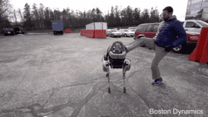

< < < Back
6 Terminator Robots Google Is Developing Alongside Its Artificial Intelligence Program – Return Of Kings
A quick visit to the page of Boston Dynamics, a subsidiary of Google, reveals the typical, flowery PR flack pleasantry that is one of the cancers of our age.
Our mission is to build the most advanced robots on Earth, with remarkable mobility, agility, dexterity and speed.
Doesn’t that sound wonderful? Surely they’re developing robots that will help mankind, right?
But if you look at the videos of what they’re actually developing, it’s easy to see how this type of machinery could soon have frightening military and police applications. Imagine a line of these coming at you, armed with weapons.
Boston Dynamics research and development for these machines has been funded by DARPA, the U.S. military’s Defense Advanced Research Projects Agency.
Here’s a look at some of what they’re building.
1. Atlas
Imagine the Atlas model or its successors someday replacing human soldiers on the battlefield or enforcement personnel at your local police department. The Defense Department says it will be used for search and rescue tasks.
The Atlas model can already complete the following tasks as of 2015:
- Drive a utility vehicle.
- Travel dismounted across rubble.
- Remove debris blocking an entryway.
- Open a door and enter a building.
- Climb an industrial ladder and traverse an industrial walkway.
- Use a tool to break through a concrete panel.
- Locate and close a valve near a leaking pipe.
- Connect a fire hose to a standpipe and turn on a valve.
2. Big Dog

The Big Dog
The Big Dog was released in 2005 and discontinued in 2015, although much of the technology developed in the Big Dog program will continue to be used in other models, including its successor the LS3. Big Dog is about the size of a small mule.
It has the following specifications:
- 2.5 feet tall
- Walks at 4 mph
- Can traverse difficult terrain, up to 35° of incline
- Can carry 350 lbs
- Laser gyroscope provides balance
- Stereo vision provides sight
3. Cheetah
The Cheetah prototype can already run at over 28 mph
Perhaps the most frightening model thus far is the Cheetah. The prototype has already set records for robots as it can run at speeds over 28 mph as seen in this video, faster than the world’s fastest running man.
Sure, Cheetah looks gangly and wobbly now and needs its control arm, but imagine a few more years or decades of research and development and billions or trillions of dollars poured into this project. I like to think of it as the Apple II of fast-moving robots. Wait until the figurative Windows 95 and later models arrive.
YouTube commenter Scott Matheson has the same idea as I do.
In the future running from the cops will mean having to outrun one of these things which will probably also be equipped with all sorts of amusing weaponry to subdue, maim, obliterate the hapless quarry. (Crooks, killers, opposition party members…)
4. WildCat
WildCat is an untethered version of Cheetah, which runs at speeds up to 19 miles per hour.
5. LS3
The LS3 model, currently in use by the U.S. military
The LS3 is militarized version of the BigDog. The LS3 is enhanced to automatically follow its leader with its eyes, carries 400 lbs of gear and has a range of 20 miles. An external power supply extends the range of the LS3.

Boston Dynamics robots are being designed so they can’t be subdued – this model quickly recovers from a swift kick on ice
6. Little Dog
The Little Dog – used for research, development, and miniaturization
The Little Dog is a miniature version of the Big Dog. Its primary use thus far is as a research and development tool for other robots, with special emphasis on locomotion.
Acquisition by Google
In 2013, Boston Dynamics was acquired by GoogleX, a semi-secret research and development agency owned by Google. Boston Dynamics was the eighth robotics company acquired by Google at the time. Google has also announced that it plans to “dominate” artificial intelligence (AI). It’s not hard to see how Google’s robots will be combined with its AI program.
The laughable New York Times article at the time suggested these machines might someday be used for the elderly.
The deal is also the clearest indication yet that Google is intent on building a new class of autonomous systems that might do anything from warehouse work to package delivery and even elder care.
What are the potential implications of opening this Pandora’s box? Google has recently set up an AI ethics panel, but not much is known about what they are discussing. Perhaps one of the biggest questions is, when will we see a hybrid of Google AI and the robots it is developing?
Is this something that will benefit mankind? Or will it be used as a force multiplier against the masses? After all, there’s nothing better for tyranny than a soldier or enforcement officer that has no feelings of guilt or remorse for what they’re inflicting on society.
Some of the world’s leading scientists and engineers including Stephen Hawking and Elon Musk have warned this merger of AI and robotics could have potentially disastrous consequences for mankind, as I reported myself at The New Modern Man.
Read More: The Best And Worst Nationalities of Women (According to Google)